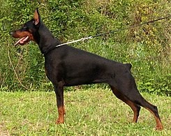

Golden Retriever
El golden retriever o cobrador dorado es una raza de perro que se desarrolló en el Reino Unido, más concretamente en Escocia, alrededor de 1850. Con sus características de perro cobrador, sabueso, bloodhound y spaniel de agua, es un hábil perro de caza con aptitudes para el rastreo. Posee una disposición amigable y una actitud que lo ha convertido en una de las razas familiares más populares —mediante registro— en los Estados Unidos, Argentina y en Canadá, el quinto más popular en Australia, y la octava raza más popular en el Reino Unido. El golden retriever tiene sus raíces en Escocia.
A mediados del siglo XVIII, la caza de aves era muy popular entre los ricos, y se necesitaba un perro que pudiera recuperar del agua y la tierra, debido a que el terreno escocés está cubierto por lagos y ríos. Los primeros perros perdigueros se cruzaron con los mejores perros de aguas, dando lugar a la raza de perro que se conoce como golden retriever. El perro se crio por primera vez en Escocia en Guisachan cerca de Glen Affric, en la propiedad de Sir Dudley Marjoribanks —después Barón de Tweedmouth—, de las Tierras Altas escocesas.
Las mejoras en las armas de fuego, durante la década de 1800, tuvieron como resultado que un número mayor de aves fueron derribadas durante la cacería a grandes distancias, y en un terreno cada vez más difícil, por lo que cada vez más aves o presas se perdían en el campo. Esto generó la necesidad de un perro especialista cobrador, debido a que el Setter, y otras razas pointer, fueron ineficaces durante el entrenamiento para la recuperación de las presas. Así, se comenzó a trabajar en la cría de un perro que desempeñara este papel que tanto hacía falta.
La cruza original fue entre un perro perdiguero de color amarillo, Nous, y una perra Tweed Water spaniel, Belle. La raza de tweed water spaniel está extinta, pero en aquel entonces era común en las áreas fronterizas. En 1868, esta cruza produjo una camada que incluía cuatro cachorros, los cuales se convirtieron en la base de un programa de mejoramiento genético que incluyó al setter irlandés, el bloodhound color arena, el perro de aguas de San Juan o Terranova menor, y dos retriever con pelaje rizado de color negro. Las líneas de sangre fueron endogámicas y también seleccionadas con exactitud por Marjoribanks apegado a su ideal de desarrollar el mejor perro de caza. Su visión incluía un perro más fuerte y poderoso que los retriever previos, uno que sería gentil y entrenable. Los perros pastores rusos no se mencionan en estos registros, ni ninguna otra raza de perros de trabajo. La ascendencia del Golden es toda de perros de caza, en línea con los objetivos de Marjoribanks. El Golden retriever es activo y poderoso y tiene una «boca blanda» para recuperar la presa mientras dura la cacería.
Dóberman

Dóberman (en idioma alemán y oficialmente dobermann) es una raza de perro relativamente reciente. Debe su nombre al alemán Karl Friedrich Louis Dobermann, quien, a finales del siglo XIX, emprende la tarea de crear una nueva raza de perro que sirviera eficazmente a su difícil trabajo como recaudador de impuestos. Para conseguir el nacimiento de esta nueva raza, se emplearon cruces de otras razas caninas como el Rottweiler, el Beauceron, el Braco de Weimar, el Manchester terrier, o el Pinscher. La principal función de esta raza en sus orígenes fue la de proteger a su criador frente a potenciales asaltantes interesados en la recaudación de los impuestos que solía portar. Actualmente sus principales funciones son: perro policía, perro de defensa, perro de búsqueda y rescate, perro guía, perro guardián, entre otras funciones, según el uso que le den las fuerzas y cuerpos de seguridad y el ejército. Es un perro considerado potencialmente peligroso debido a sus características físicas. Esta raza debe su nombre a Karl Friedrich Louis Dobermann, un vigilante nocturno y recaudador de impuestos que entre 1834 y 1894, se encargaba de la custodia de una perrera en la ciudad de Apolda (Turingia, Alemania).
A partir del primer año de vigilancia (alrededor de 1860), comenzó a necesitar un perro para defenderse, pero ninguna de las razas a las que podía acceder era de su entera satisfacción. Comenzó la creación usando un temido perro pastor de turingia llamado Schnuppe, junto con los extintos perros de carnicero (parientes del Rottweiler y Boyero de Appenzell) y perros de muestra (similares a Weimaraner, pero sin raza definida). Después de estos cruces, intervinieron en la formación de la raza un Manchester terrier y una hembra negra de Galgo inglés.910 Algunas fuentes todavía relatan también la posible participación del antiguo Dogo alemán.
Hay ciertas controversias en relación a qué perros realmente se utilizaron en el desarrollo del dobermann. De este enmarañamiento de argumentos se puede sacar una contradicción, que las mismas personas que debatieron sobre esto son las que afirmaron una no relación de sangre entre el Manchester terrier y el dobermann. Posiblemente los estudios genéticos puedan algún día dar más información exacta sobre el origen del dóbermann. Lo que se sabe con certeza es que se cruzaron diversos tipos de perros regionales con temperamento para defensa, y así surgió el perro de Louis Dobermann.
Karl Friedrich Louis Dobermann falleció en 1894, cuatro años antes de que la raza fuera reconocida.